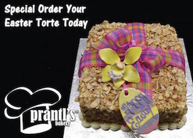
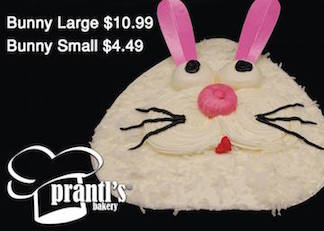

Celebrations
Birthdays, anniversaries, showers, graduations, religious celebrations etc. We have baked special treats for each of life’s special events and can customize them to showcase your theme or ideas. View our photo gallery on Facebook, and if you would like to inquire about a custom cake not available on our website, please email us at info@prantlsbakery.com.
Sizes:
We offer custom cake rounds sizes from 8”-12”. Sheet cakes can be ordered from the sizes of 1/4, 1/2, 3/4 and full.
Pricing:
Our cakes vary in price, depending on type, size, and “extras” such as decorations and personalizations.
Delivery:
Delivery fees vary by location. Smaller cakes can be packed by us to facilitate pick-up at the bakery.
Weddings
Weddings are such a joyous occasion and each one is different! The same is true of our wedding cakes. We have an almost unlimited combination of flavors and styles to choose from.
Click on a wedding cake style to see a gallery of some of the cakes we've made:
- Burnt Almond Torte
- Signature Shadyside Scrolls
- Modern Elegance
- Inspired by nature
- Traditional
- Fun and Funky
- Fondant and Gumpaste
Batters and fillings:
Our most popular batter is yellow, but we also offer red velvet, chocolate, marble, and others upon request. As for fillings, we recommend white buttercream icing, chocolate fudge icing, strawberry crème filling, vanilla pastry cream, or one of several fruit fillings (lemon, raspberry, apricot, strawberry, etc.). That being said, if you have something special in mind it can’t hurt to ask!
Sizes:
To keep proportionality and maintain structure, wedding cakes come in certain sizes with certain tier dimensions. If the size of the wedding party falls in between cake sizes, we can offer additional sheet cakes up to the amount of slices required.
Pricing:
Our wedding cakes vary in price, depending on type, size, and “extras” such as special fillings, pillars, etc.
Other delicacies:
Our wedding cakes are really just the beginning. Lots of folks opt for Individual desserts (3” mini-cakes, cupcakes, etc.) and of course there’s always room in the celebration for Cookie Trays, Monogrammed Petit Fours, Junior Pastry Trays, Grooms’ Cakes, Shower Cakes, Monogrammed Cookies, Wedding Challah, Breakfast Trays, etc.
Delivery:
We co-ordinate with the reception venue, florist, etc. for the timing of the delivery of the cake. Delivery fees vary by location. Smaller cakes can be packed by us to facilitate pick-up at the bakery.
Holidays
From Valentine’s Day, Christmas, Thanksgiving, and Mardi Gras, we have cakes for your favorite occasions!
Easter is right around the corner. Check out our baked goods that are perfect for your fun, colorful weekend, ranging from Easter themed cookies, cakes, cupcakes, and more.
 